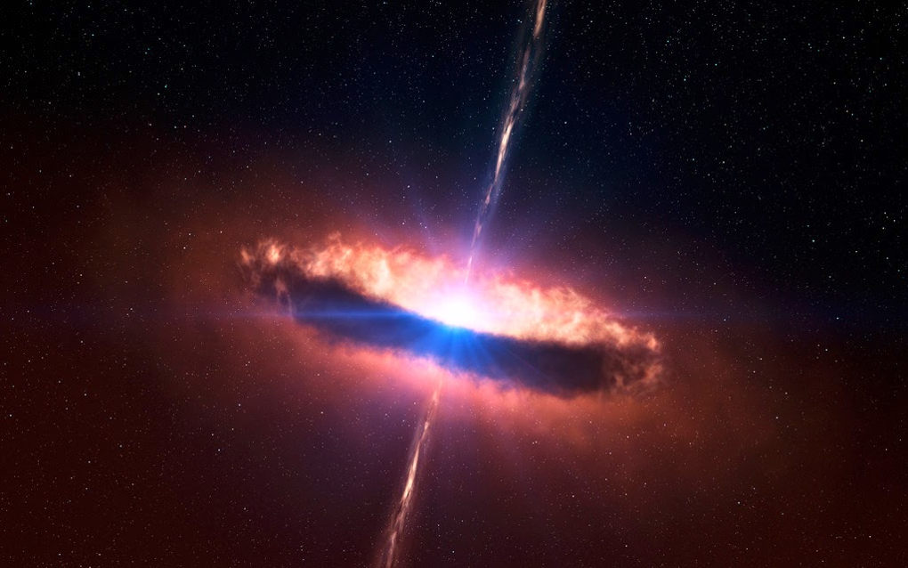

Пульсары
Пульсар — космический источник радио- (радиопульсар), оптического (оптический пульсар), рентгеновского (рентгеновский пульсар) и/или гамма- (гамма-пульсар) излучений, приходящих на Землю в виде периодических всплесков (импульсов). Согласно доминирующей астрофизической модели, пульсары представляют собой вращающиеся нейтронные звёзды с магнитным полем, которое наклонено к оси вращения, что вызывает модуляцию приходящего на Землю излучения.
Первый пульсар был открыт в июле 1967 года Джоселин Белл, аспиранткой Энтони Хьюиша, на меридианном радиотелескопе Маллардской радиоастрономической обсерватории Кембриджского университета, на длине волны 3,5 м (85,7 МГц). За этот выдающийся результат Хьюиш получил в 1974 году Нобелевскую премию. Современные названия этого пульсара — PSR B1919+21 или PSR J1921+2153.